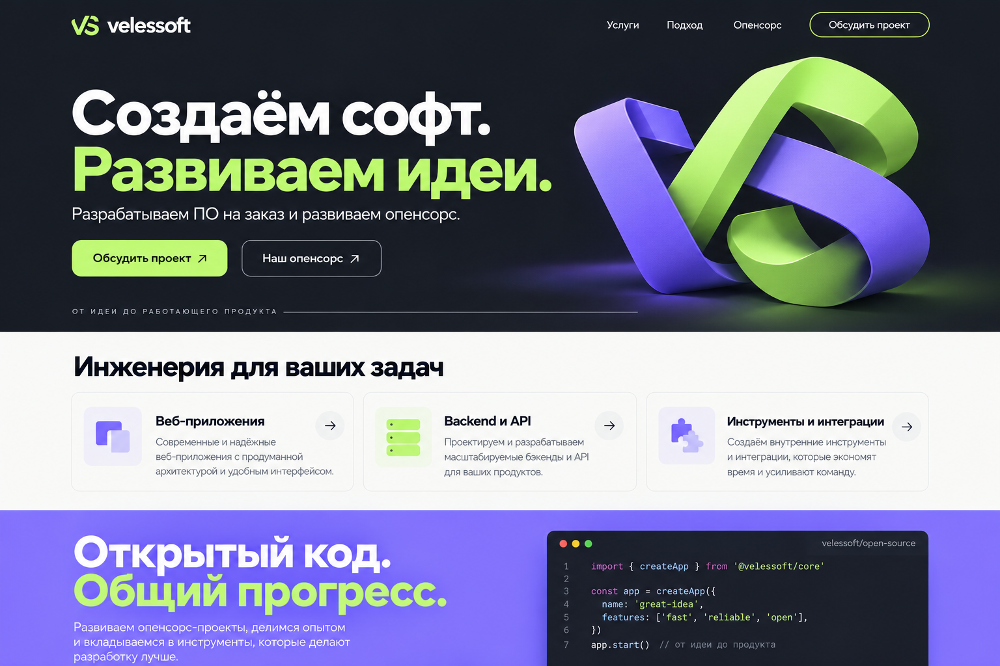

МЕНЬШЕ ГЛЯНЦА.
БОЛЬШЕ КОДА.
Независимая студия разработки. Делаем софт на заказ. Развиваем опенсорс. Делимся тем, что помогает строить дальше.
OPEN / BUILD / REPEAT — альтернативная айдентика. DIY-плакат в маркетинге, спокойная инженерная система внутри продукта. Тексты и проекты ниже — примеры для согласования.
[ ОТКРЫТЫЙ КОД ]
[ ПРЯМОЙ КОНТАКТ ]
THE
FUTURE ↗
ХОРОШИЙ СОФТ
НЕ ПОЯВЛЯЕТСЯ
ИЗ ВОЗДУХА.
А полезные инструменты — в открытый код.
Характер бренда
Что делаем, как работаем, где посмотреть код. Без «революционных экосистем».
Документация, реальные решения и вклад команды. Открываем то, чем можем делиться.
Плакатная графика, резкие края и стикеры. Удобство продукта важнее декоративного шума.
VS. БЕЗ ЛИШНИХ СЛОЁВ.


SVG — упрощённая геометрическая интерпретация VS, а не точная векторизация исходного эскиза. Название набирается Manrope 800; в финальном логотипе его следует перевести в кривые после согласования.
- Охранное поле: не меньше ¼ высоты знака со всех сторон.
- Минимум: знак 24 px; связка с названием — 160 px по ширине. Для 16 px использовать отдельную упрощённую пиксельную версию после проверки.
- Лайм — на графите. Графит и фиолетовый — на светлом. Белый — на графите.
- Не растягивать, не менять пропорции, не добавлять обводку и тени. Объёмная графика допустима как иллюстрация, не как мастер-логотип.
КИСЛОТА НА ГРАФИТЕ.
graphite
paper
lime
violet
Ориентир для маркетинговых страниц: 75–85% нейтральных поверхностей, остальное — лайм и фиолетовый. В продукте цвет экономнее: один главный акцент на действие, нейтральные рабочие поверхности.
Светлая тема
Фон #F7F8F5 · поверхность #FFFFFF
Текст #171B24 · вторичный #545C6B
Ссылка #5845B8
Тёмная тема
Фон #171B24 · поверхность #222834
Текст #F7F8F5 · вторичный #B8C0CD
Ссылка #B6AAFF
Брендовый #8B7CF6 на белом и белый на этом фиолетовом не использовать для мелкого текста. На лаймовой кнопке — графитовый текст. Ссылки подчёркивать; статусы сопровождать текстом и иконкой.
| Пара | Контраст | Применение |
|---|---|---|
| Графит / лайм | 12.78:1 | AA, обычный текст |
| Белый / графит | 16.17:1 | AA, обычный текст |
| Ссылка / светлый | 6.66:1 | AA, обычный текст |
| Ссылка / тёмный | 8.36:1 | AA, обычный текст |
| Графит / фиолетовый | 5.18:1 | AA, обычный текст |
ТИПОГРАФИКА С ГОЛОСОМ.
Manrope
Современный софт
Аа Бб Вв 012345
400 — текст · 500 — подписи · 600 — кнопки · 700–800 — заголовки.
JetBrains Mono
const idea = create(); ship(idea);
400–500: код, версии, пути, технические данные. Не использовать для длинных абзацев.
| Стиль | Desktop / mobile | Межстрочный |
|---|---|---|
| Display | 64 / 40 px · 800 | 1.08 |
| H2 | 40 / 30 px · 700 | 1.15 |
| H3 | 24 / 22 px · 700 | 1.25 |
| Основной | Приложение 14 / сайт 16 px · 400 | 1.6 |
| Подпись / код | 14 px · 400–500 | 1.5 |
Верхний регистр только для коротких заголовков и меток. Длинный текст — обычный регистр Manrope 400. Моноширинный шрифт — для навигации, кода и подписей. Не имитировать ошибки терминала как декоративные сообщения.
Длина строки: 55–75 символов. В формах размер текста не менее 16 px. Шрифты с кириллицей включены локально; установка в систему не требуется для просмотра.
ИКОНКИ БЕЗ ДЕКОРА.
Lucide · сетка 24 × 24 · толщина 2 px · скруглённые окончания · currentColor. В плотных интерфейсах допустимы 16 и 20 px. Не смешивать с залитыми иконками другой библиотеки.


Декоративные иконки: aria-hidden. Кнопки без текста: обязательное aria-label. Логотипы GitHub и других сервисов брать из их официальных бренд-наборов, не подменять похожими пиктограммами.
Ритм, сетка, движение.
4 / 8
Шаг 4 px. Основные отступы: 8, 12, 16, 24, 32, 48, 64, 96.
12 / 4
Desktop: 12 колонок, gutter 24, контейнер до 1200 px. Mobile: 4 колонки, gutter 16, поля 20 px.
0 / 3
Радиусы: 0 px. Маркетинговые кнопки — жёсткая тень 3 px; в продукте тени убираем. Стикер можно повернуть на 2–3°, поля и таблицы — всегда ровно.
Переходы: 120 ms для hover, 180 ms для раскрытия; ease-out. Поддерживать prefers-reduced-motion. Без постоянного вращения и фоновой анимации в рабочих интерфейсах.
Брейкпоинты: 640 / 960 / 1280 px. На мобильном — одна колонка форм, навигация за кнопкой «Меню», действия с областью нажатия не менее 44 × 44 px.
Компоненты и состояния.
Desktop: 34 px · touch: 44 px · gap 8 · radius 0 · focus ring 3 · одна primary-кнопка на группу
Состояния
Изменения сохранены
Не удалось сохранить. Повторите попытку.
Статус передаётся словами, не только цветом.
Пока нет проектов
Создайте проект, чтобы собрать код, задачи и документацию в одном месте.
Удалить проект?
В реальном продукте подтвердите удаление именем проекта и объясните, какие данные будут удалены. Разрушительное действие — отдельная кнопка с ясным текстом.
Для загрузки данных — skeleton; для пустого результата поиска — запрос и действие «Сбросить фильтры».
ГЛАВНАЯ / БЕЗ ПИДЖАКА.
ВАША ИДЕЯ.
НАШ КОММИТ.
Разрабатываем ПО на заказ и развиваем опенсорс.
Сложная задача?
Приносите.
Разбираемся в задаче, проектируем решение, пишем код и помогаем запустить.
Есть чем
поделиться.
Развиваем открытые инструменты и принимаем вклад сообщества.
Структура: первый экран → задачи клиентов → реальные кейсы → подход → опенсорс → команда → контакт. Кейсы показывают задачу, решение и подтверждённый результат; без вымышленных цифр и клиентов.
Предыдущее, более спокойное направление

FORK THE LOOK.
BUILD SOMETHING
WORTH FORKING.
Обложка опенсорс-проекта · название и описание подставляются под реальный репозиторий.
README.md → docs/ → CONTRIBUTING.mdОбщие шрифты, иконки, сетка и поведение. У каждого проекта — своё имя и геометрический символ; подпись by velessoft связывает его со студией. Акцент можно менять, но цвет статусов сохраняется.
Репозитории
Демонстрационный интерфейс проекта
| Название | Статус | Видимость |
|---|---|---|
| project-core | Подключён | Публичный |
| project-docs | Черновик | Приватный |
Продуктовый интерфейс
Нейтральная поверхность, понятные таблицы и формы. Лайм — главное действие. Фиолетовый — выбранная область, иллюстрации и идентичность.
Опенсорс
README: знак, краткое назначение, установка, минимальный пример, документация, вклад, лицензия. Обложка репозитория — тот же графит, крупное имя и одна акцентная форма.
ЗАБИРАЙТЕ В РАБОТУ.
- tokens.json — базовые и семантические токены для обеих тем.
- tokens.css — локальные шрифты, темы и стартовые стили компонентов.
- assets/logo-*.svg — четыре цветовых версии знака; favicon.svg — исходник для иконки сайта.
- assets/icons/ — выбранный набор Lucide и лицензия.
- assets/fonts/ — Manrope, JetBrains Mono и лицензии OFL.
- README.md — состав, установка, ограничения и следующий этап.
Чеклист экрана: клавиатурная навигация; видимый фокус; подписи полей; ошибки рядом с полем; контраст текста; 320 / 768 / 1440 px; длинные названия; пустое, ошибочное и загрузочное состояние; reduced motion.
Панк-версия не использует глитч, мигание, мелкий нечитаемый код или курсор с анимацией. Для функциональных элементов — прямые подписи и устойчивый фокус. Это стартовая дизайн-система, а не полный комплект экранов всех будущих продуктов. Для каждого конкретного проекта понадобятся пользовательские сценарии, карта экранов и макеты по его требованиям.
Источники: Manrope / OFL · JetBrains Mono / OFL · Lucide / ISC.
Архитектура системы
Основа для сайтов, кабинетов, внутренних систем, опенсорс-инструментов и мобильных веб-приложений. Для конкретного продукта сначала определите пользователей, задачи и данные.
Основа
Цвет, шрифт, размер, отступ, радиус, движение → семантические токены → тема.
Компоненты
Кнопка, поле, переключатель, таблица, диалог. У каждого — состояния и правила поведения.
Сценарии
Поиск → список → просмотр → создание → редактирование → подтверждение.
Как начать новый продукт
- Опишите роли и 3–5 главных задач пользователя.
- Составьте сущности: поля, связи, права, жизненный цикл.
- Нарисуйте карту разделов и основные пути пользователя.
- Выберите шаблоны экранов из системы.
- Добавьте пустые, загрузочные и ошибочные состояния.
- Проверьте сценарии на клавиатуре и узком экране.
Визуальный характер бренда сильнее на маркетинговых страницах. В рабочих экранах приоритет — плотность информации, читаемость и предсказуемые действия.
Шаблоны экранов
| Экран | Состав и поведение |
|---|---|
| Список сущностей | Заголовок, основное действие, поиск, фильтры, таблица/карточки, число результатов, пагинация. Фильтры сохраняются при возврате из карточки. |
| Карточка сущности | Хлебные крошки, название, статус, действия, данные и история. Вкладки только для независимых групп информации. |
| Создание / редактирование | Поля по смысловым группам, обязательность, подсказки, ошибки рядом. Сохранить и отменить; предупреждение о несохранённых изменениях. |
| Настройки | Категории слева, формы справа. Опасные действия отдельно. Указать область действия: пользователь, проект или организация. |
| Обзор | Только показатели, которые помогают принять решение. Период, источник, состояние обновления и переход к деталям. |
| Документация | Навигация, поиск, оглавление, код с копированием, версия и связанные темы. |
| Вход и доступ | Понятные способы входа, восстановление, сессия истекла, недостаточно прав. После входа вернуть к исходной задаче. |
Поведение и состояния
| Ситуация | Правило |
|---|---|
| Загрузка | Сохранять структуру экрана skeleton-элементами. На отправке блокировать повторное действие; aria-busy. Длительные операции показывают прогресс, если он известен. |
| Пусто | Первый запуск: объяснение и создание. Нет результатов: запрос и сброс фильтров. Нет прав: причина и доступный следующий шаг. |
| Ошибка | Сохранять ввод. Объяснить, что не получилось, и дать повтор. Ошибки полей связать через aria-describedby; итог ошибки формы объявить через role=alert. |
| Диалог | Перенести фокус внутрь, удерживать в диалоге, Escape закрывает, после закрытия вернуть фокус. Разрушительное действие описывает объект и последствия. |
| Поиск | Указать область поиска. Enter или debounce 250–400 ms. Отменять устаревшие запросы; показывать количество результатов. |
| Удаление | Предпочесть восстановление, когда возможно. Для необратимого удаления — подтверждение; для критичного — имя объекта. |
| Сохранение | Сообщить результат без исчезновения данных. При конфликте изменений предложить сравнение/перезагрузку; не перезаписывать молча. |
| Сеть недоступна | Показать статус, сохранить черновик, предложить повтор после восстановления. Не выдавать локальное изменение за серверное. |
Спецификация компонентов
| Компонент | Варианты | Правила |
|---|---|---|
| Button | primary / secondary / ghost / danger; desktop 34 / touch 44 px | Один главный призыв на группу. Loading сохраняет ширину. Disabled сопровождается объяснением, когда причина неочевидна. |
| Input / textarea | default / focus / error / disabled / readonly | Постоянный label; placeholder не заменяет подпись. Проверка после blur или отправки; при исправлении убрать ошибку. |
| Select | native / searchable / multiselect | Для коротких списков native. Для большого числа значений — поиск. Показывать выбранное и способ очистки. |
| Checkbox / radio / switch | unchecked / checked / mixed | Checkbox — независимый выбор, radio — один из группы, switch — немедленная настройка. Вся подпись кликабельна. |
| Tabs | horizontal / overflow | Arrow keys, Home/End; aria-selected и связанная панель. Не подменяют глобальную навигацию. |
| Table | standard / compact / selectable | Сортировка явно отмечена; числа справа; действия в конце. На mobile — прокрутка таблицы или осмысленные карточки. |
| Toast / banner | info / success / error | Toast для результата; banner для длительной проблемы. Критичная информация не исчезает по таймеру. |
| Tooltip | hover + focus | Только дополнительная информация, не обязательная инструкция. Essential-контент доступен без hover. |
Адаптивность и доступность
- 320–639 px: одна колонка; основное действие доступно без горизонтальной прокрутки.
- 640–959 px: две колонки, если данные помещаются; навигация сворачивается.
- От 960 px: постоянная боковая навигация; контент ограничен разумной шириной.
- Текст масштабируется до 200%; при zoom 400% проверить reflow. Не фиксировать высоту текстовых карточек.
- Контраст обычного текста ≥4.5:1, крупного ≥3:1. Границы значимых контролов и фокус ≥3:1.
- Клавиатура: логичный порядок Tab, видимый фокус, Escape для временных слоёв. Иконки имеют доступные названия.
- Учитывать длинные имена, локализацию, даты и часовые пояса. Не полагаться только на цвет.
- Touch-цели в этой системе — минимум 44×44 px. Компактные таблицы расширяют область нажатия на мобильных.
Пороговые значения — критерии проектирования; соответствие всего продукта требует проверки реальных экранов и сценариев.
Рабочий пример приложения
Локальная модель списка проектов: создание, редактирование, поиск, фильтрация и удаление с отменой. Данные сохраняются в этом браузере, если доступно локальное хранилище.
Выбор компонентов
Начинайте с задачи пользователя. Таблица ниже помогает выбрать подходящий элемент и избежать лишней сложности.
| Задача | Решение | Когда менять подход |
|---|---|---|
| Выбрать одно значение | 2–5 коротких вариантов: radio. Более длинный список: select. | Большой справочник: combobox с поиском, клавиатурой и явным выбранным значением. |
| Включить настройку | Switch, если изменение применяется сразу. | Если есть общая кнопка сохранения — checkbox. |
| Открыть детали | Отдельная страница для сущности с собственным URL. | Drawer для быстрого просмотра с сохранением контекста списка. |
| Подтвердить действие | Dialog для короткого решения с последствиями. | Много полей и шагов — отдельная страница, не длинный диалог. |
| Показать коллекцию | Таблица для сравнения атрибутов. | Карточки для визуальных объектов. Kanban — только если перемещение по статусам является задачей. |
| Показать обратную связь | Inline для ошибок ввода; toast для результата. | Banner для проблемы, которая сохраняется и влияет на работу. |
| Дать несколько действий | Главное видно, вторичные рядом или в меню. | Не прятать единственное полезное действие за меню «Ещё». |
Лаборатория состояний
Проверьте один экран в разных условиях. Эти состояния нужны в каждом приложении, даже когда основной сценарий уже выглядит законченным.
Контракт экрана
Передавайте разработчику не только картинку. Этот шаблон фиксирует поведение и границы задачи.
Данные и права
- Роли, видимость и разрешённые операции.
- Поля: тип, обязательность, формат, длина.
- Источники данных, обновление и конфликт версий.
- Какие параметры сохраняются в URL.
Взаимодействие
- Точка входа, основной путь и возврат.
- Клавиатура, фокус и порядок Tab.
- Загрузка, ошибки, пустота, успех, offline.
- Поведение на mobile и с длинным контентом.
Критерий готовности
Пользователь завершает основную задачу; ошибки можно исправить; изменения не теряются; недоступное действие объяснено; критичный результат подтверждён. Макет, спецификация и реализация используют одинаковые имена токенов.
Развитие системы
Три уровня
Базовые: lime, graphite, spacing.
Семантические: background, text, primary, error.
Компонентные: control-height, panel-padding.
Продукт использует семантическую роль; тема меняет значение роли.
Когда добавлять компонент
Есть реальная повторяющаяся задача. Существующий компонент не решает её без сложных исключений. Описаны API, состояния, клавиатура, темы и адаптивность.
Статусы зрелости
| Статус | Значение |
|---|---|
| Концепт | Визуальный пример; поведение ещё не реализовано. |
| Прототип | Локальное поведение работает; нет серверной интеграции и полного аудита. |
| Готов к продукту | Проверены реальные данные, доступность, браузеры, ошибки, производительность и интеграция. |
Текущий каталог: рабочие примеры — прототипы; остальные образцы — концепты. Изменения, нарушающие API или смысл токенов, требуют отдельной миграции.
v0.6 / Что добавлено
Полнотекстовый поиск разделов, лаборатория состояний, правила выбора компонентов, контракт экрана, чеклист выпуска и согласованные типографические токены.